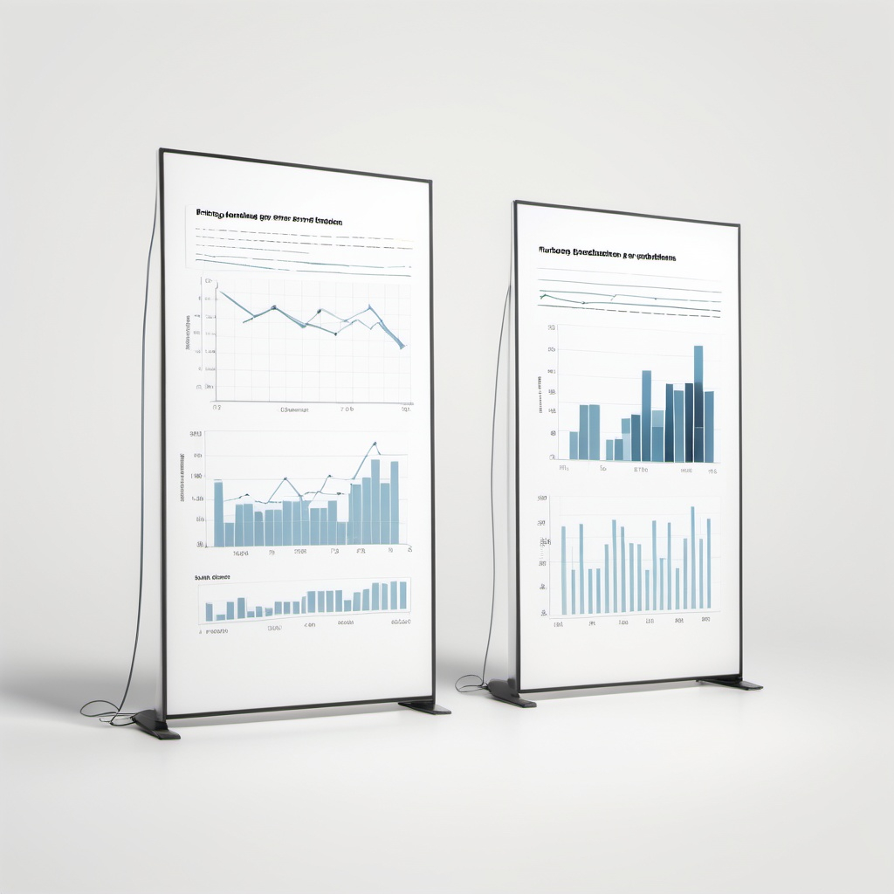

-

Model Comparison
-

ARIMA, LSTM, Random Forest
ETS, FB Prophet
-
MAE
-

MSE
-

RMSE
-
MAPE
-

Hyperparameter Tuning
Evaluating Five Time Series Methods to Predict Stock Prices
The goal was to predict next-day stock prices using historical stock data, with the project assessing how each model could handle stock price fluctuations, trends, seasonality, and market events.
Models
Model Details
ARIMA: A classical statistical model effective for univariate time series data exhibiting stationarity or trends. ARIMA is well-suited for modeling linear relationships and capturing short-term dependencies in stock prices.
ETS: A smoothing technique that models level, trend, and seasonality in data. It is particularly useful when the data exhibits consistent seasonal patterns, providing robust predictions for time series with cyclical or irregular fluctuations.
LSTM: A type of recurrent neural network (RNN) that excels in capturing long-term dependencies in sequential data. LSTM is ideal for modeling stock prices with complex, nonlinear relationships and can identify temporal patterns that traditional methods might miss.
Prophet: A forecasting tool developed by Facebook, designed for time series data with strong seasonal effects and holidays. Prophet is highly flexible and can accommodate non-linear trends and external factors, making it a good choice for stock prices influenced by market events or seasonal patterns.
Random Forest: An ensemble learning method based on decision trees, Random Forest can be adapted for time series forecasting by using lagged features and external variables as inputs. It is particularly useful for modeling non-linear relationships and capturing interactions between different predictors, providing robust forecasts even with noisy data.
Results
Our analysis produced several key findings, which are visually represented in the project 2 code section above. Advanced models like LSTM and Random Forest outperformed traditional methods in capturing complex patterns.
Hyperparameter Tuning of ARIMA: Enhanced model accuracy by reducing the average MSE score from 611 to 21 through optimal hyperparameter selection. Hyperparameter tuning of ARIMA yield stronger performance than ETS and FB Prophet default models.
The top-performing models based on MSE are LSTM, ARIMA with updated parameters (5, 2, 0), and Random Forest Regression. Depending on the specific use case, one can choose to employ any combination of these models, either individually or collectively through a VotingRegressor.
Research Process